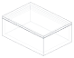

printable-part
base
- Valid
- yes
- Manifold
- yes
- Volume
- 17028.1 mm³
- Bounds
- 64.8 × 44.8 × 22.4 mm
- Material
- printed-polymer

base is valid, nonempty geometry
{"role": "printable-part"}
lid is valid, nonempty geometry
{"role": "printable-part"}
assembled base and lid have no solid interference: overlap 0mm^3
{"components": ["base", "lid"]}
nominal lid skirt clearance per side: 0.3mm is within minimum 0.2mm
{"classification": "configurable-default, not physically verified", "measurement_kind": "clearance"}
minimum modeled wall thickness: 2mm is within minimum 1.6mm
{"classification": "example design rule", "measurement_kind": "wall-thickness"}
base outside X dimension: observed expected value
No supplemental evidence
base outside Y dimension: observed expected value
No supplemental evidence
| Name | Value | Unit | Source | Description |
|---|---|---|---|---|
| floor | 2.4 | mm | configurable-default | Example value; tune for the intended contents, process, and material. |
| inside_x | 60 | mm | configurable-default | Example value; tune for the intended contents, process, and material. |
| inside_y | 40 | mm | configurable-default | Example value; tune for the intended contents, process, and material. |
| inside_z | 20 | mm | configurable-default | Example value; tune for the intended contents, process, and material. |
| lid_clearance_per_side | 0.3 | mm | configurable-default | Example value; tune for the intended contents, process, and material. |
| lid_thickness | 2.4 | mm | configurable-default | Example value; tune for the intended contents, process, and material. |
| locating_skirt_depth | 3 | mm | configurable-default | Example value; tune for the intended contents, process, and material. |
| locating_skirt_wall | 2 | mm | configurable-default | Example value; tune for the intended contents, process, and material. |
| wall | 2.4 | mm | configurable-default | Example value; tune for the intended contents, process, and material. |